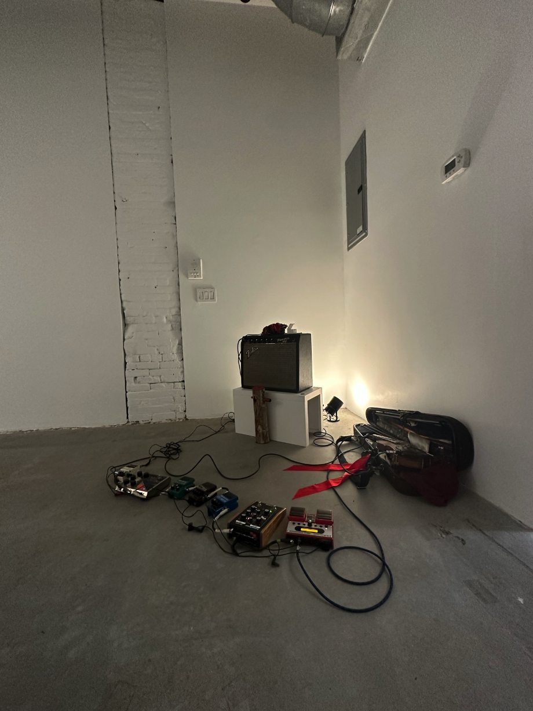
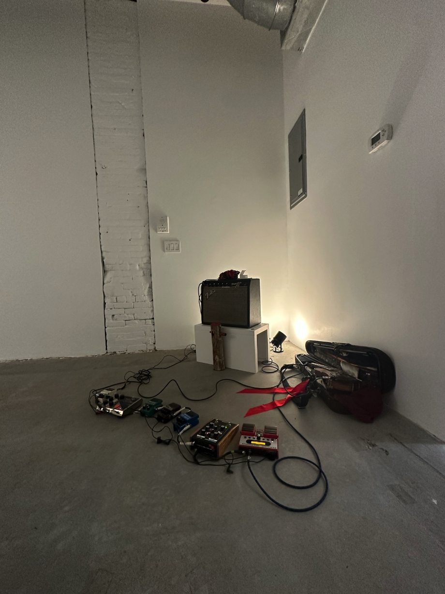

44LLC is pleased to present Offering, a new installation work by thecreativedestruction,
a contemporary art collaborative founded by CYJO and Timothy Archambault.
This work uses tobacco to bring awareness to the missing and murdered Indigenous women,
all who have experienced disproportionate violence. Within North American Indigenous peoples,
tobacco (nicotiana rustica) has been used for centuries as a medicine with cultural and spiritual importance.
It is prescribed to promote physical, spiritual, emotional, and community well-being. A gift of tobacco is a sign
of respect and may be offered when asking for help, guidance, or protection to an elder or to the earth when
using its resources.
For this installation, each pile of tobacco is an offering for each Indigenous woman who has been missing
or murdered within Canada and the U.S. The missing and murdered Indigenous epidemic is a national crisis that
currently affects Indigenous people in regions that include First Nations, Inuit, Metis (FNIM), and Native Alaskan
communities. The Royal Canadian Mounted Police 2014 report, “Missing and Murdered Aboriginal Women: A National Operational
Overview”, found that thousands of Indigenous women were murdered over a span of thirty years. The homicide rate in Canada
for Indigenous women was almost six times as high as the homicide rate for non-Indigenous women. Similar to Canada's situation,
specific data on Missing and Murdered Indigenous Women in the U.S. has also been difficult to gather. May 5th is commemorated as
National Day of Awareness for Missing and Murdered Indigenous Women and Girls.
Learn More and Support:
National Inquiry into Missing and Murdered Indigenous Women & Girls
National Indigenous Women's Resource Center
U.S. Dept. of Interior
Amnesty International
 

thecreativedestruction
thecreativedestruction is a contemporary art collaborative founded in 2016 by CYJO and Timothy Archambault to support and promote art that is realized through an existential and experiential process of development. A Miami-based architect, Indigenous flutist, and composer born in Connecticut, Timothy Archambault has since the ’90s developed a repertoire of early 20th-century Indigenous music, contemporary music by Indigenous composers, and traditional Canadian Algonquin flute songs, a number of which he recorded for the Smithsonian National Museum of the American Indian Archives in 2007. He is a Hereditary Senator of the Kichesipirini Algonquin First Nation, a member of the Métis Nation of Quebec and the First Nations Composers Initiative. CYJO is a Miami-based mixed media, Korean American artist who has created a body of work since the early 2000’s exploring connections and complexities within the identity of people and places. Her work has been exhibited in various institutions including the Smithsonian National Portrait Gallery, Museum of Contemporary Art (Chengdu) and the Venice Architectural Biennale. @thecreativedestruction @timothyarchambault @cyjostudio
Laura Ortman
Laura Ortman, a member of the White Mountain Apache tribe, is a NYC-based musician and composer who creates across multiple platforms, including albums, live performance, field recordings, and video works. She has performed at The Whitney Museum of American Art, The Guggenheim, and The Museum of Modern Art in New York, the Musée d’Art Contemporain de Montréal, Artists Space, Venice Biennale, The Stone residency, The New Museum, imagineNATIVE Film + Media Arts Festival, The Toronto Biennial, and the Centre Pompidou, Paris, among countless established and DIY venues in the US, Canada, and Europe. Ortman is a recipient of several fellowships including the 2022 Forge Project Fellowship and United States Artist Fellowship. Her recent work is part of a documentary on missing and murdered Indigenous women, “Murder in Bighorn”, streaming on Showtime.
@ortwoman